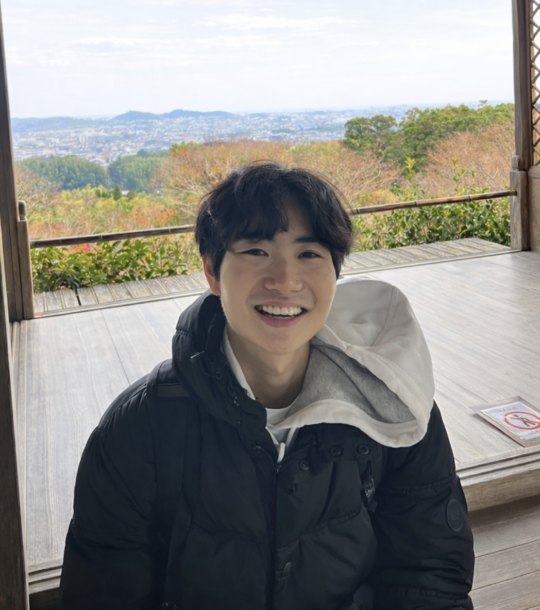

Video Journalism / CINE 366s / Spring 2026
Junior at Duke. Computer Science major. Journalism this semester.

I'm a junior at Duke University majoring in Computer Science. This website is a collection of the journalism works I've done this semester for CINE 366s Video Journalism.